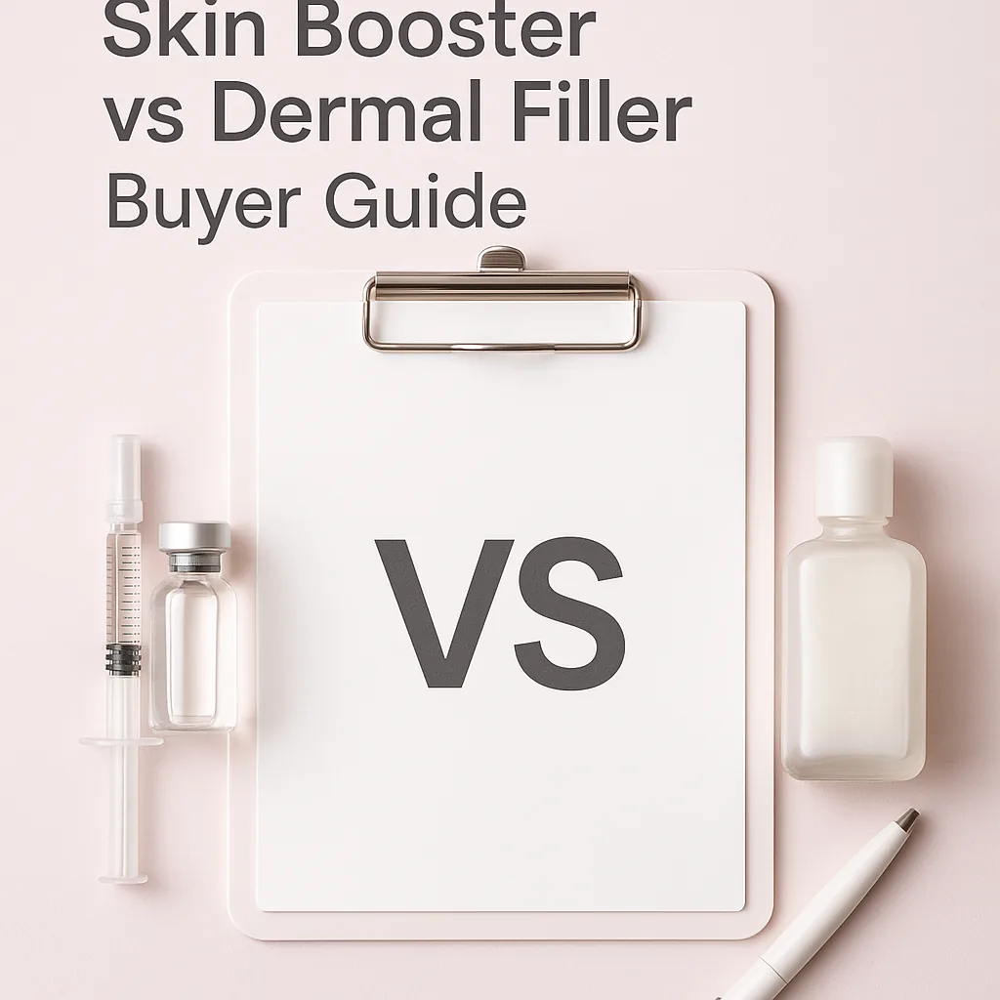
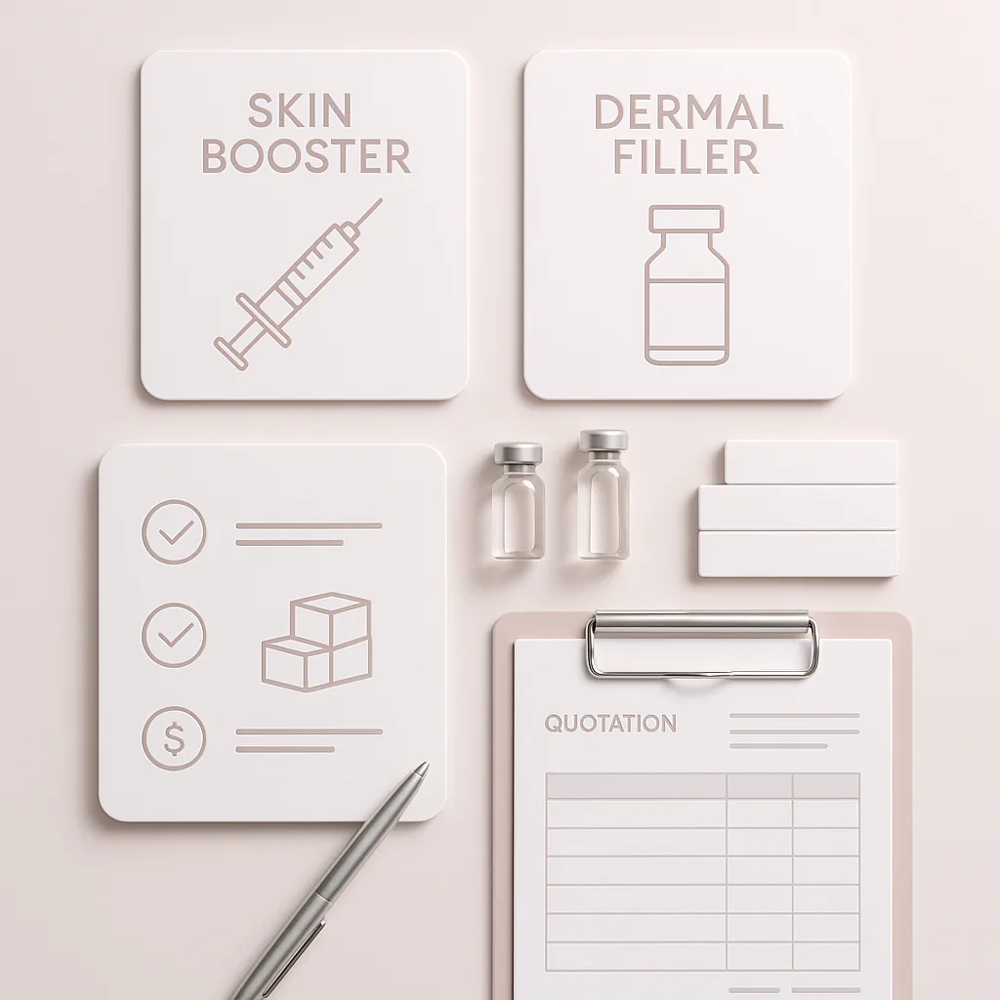
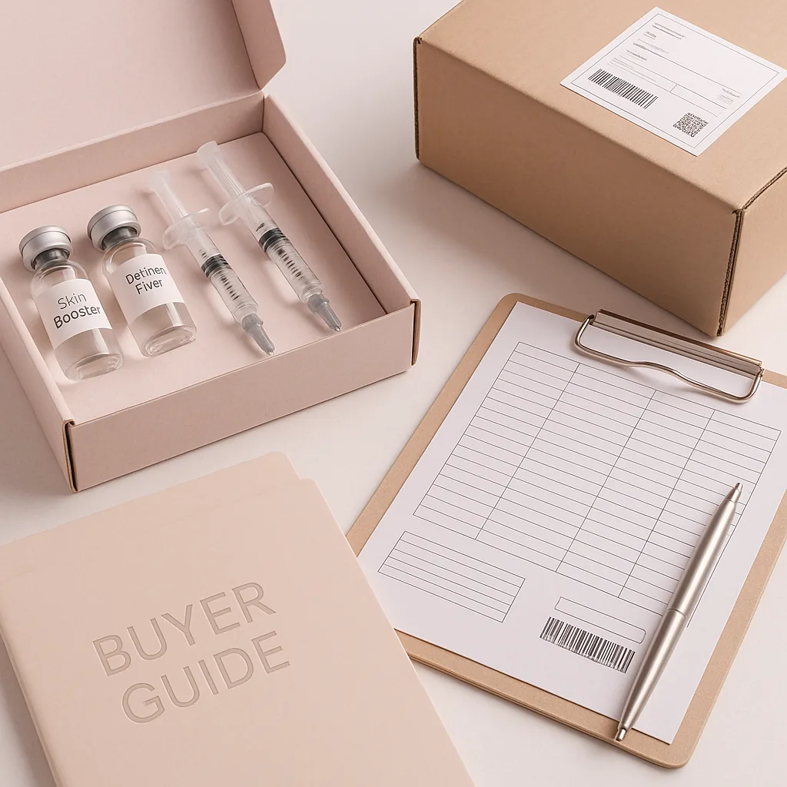

Explore the essential differences and buying considerations between skin boosters and dermal fillers in this detailed guide tailored for professional buyers.
As a professional buyer in the aesthetic industry, understanding the differences between skin boosters and dermal fillers is crucial. Both products serve distinct purposes and cater to different client needs, making it essential for clinics, spas, and distributors to make informed purchasing decisions. This guide will help you navigate the complexities of these two popular treatments, ensuring you choose the right products for your clientele.
With an increasing demand for aesthetic treatments, buyers must be equipped with the right knowledge to source effectively. This article will provide insights into the key considerations when comparing skin boosters and dermal fillers, helping you optimize your procurement strategy.
Key Takeaways
- Understand the primary differences between skin boosters and dermal fillers to meet client expectations.
- Evaluate product formulations and brands to ensure quality and efficacy.
- Consider packaging options that align with your business needs for storage and display.
- Maintain clear communication with suppliers regarding batch visibility and expiration dates.
- Plan your orders based on minimum order quantities (MOQ) and anticipated demand.
What this guide covers
- Understanding skin boosters and dermal fillers
- Buyer scenarios and evaluation criteria
- Comparison of product options
- Checklist for requesting quotes
- Logistics and documentation considerations
- MOQ, quotations, and reorder planning
- Frequently asked questions
What buyers should understand first

Skin boosters and dermal fillers are both injectable treatments used in aesthetic medicine, but they serve different purposes. Skin boosters are designed to hydrate and improve skin elasticity, providing a subtle glow and enhancing skin texture. They typically contain hyaluronic acid and are injected into the skin's mid to deep layers. On the other hand, dermal fillers are used to restore volume and reduce the appearance of wrinkles and fine lines. They can also enhance facial contours and are often used in areas like the cheeks, lips, and nasolabial folds.
Understanding these differences is vital for clinics and spas looking to offer tailored solutions to their clients. As a buyer, knowing the specific applications and benefits of each product will help you select the right options for your practice.
Which buyers is this most relevant for?
This guide is particularly relevant for professional buyers in clinics, spas, and aesthetic practices who are responsible for sourcing injectables. Whether you are a distributor looking to stock products or a clinic owner planning to expand your treatment offerings, understanding the nuances of skin boosters and dermal fillers will aid in effective order planning. Buyers should consider their clientele's needs, seasonal demand fluctuations, and potential for product reorders when evaluating these products.
How to compare options before ordering
When comparing skin boosters and dermal fillers, consider the following criteria:
- Product Type: Identify whether the product is a skin booster or a dermal filler to align with your treatment offerings.
- Brand Reputation: Research the brands available in the market to ensure you are sourcing from reputable manufacturers.
- Packaging: Look for packaging that suits your storage capabilities and client presentation needs.
- Batch and Expiry Visibility: Ensure that suppliers provide clear information regarding batch numbers and expiration dates for quality assurance.
- Supplier Communication: Establish a reliable communication channel with suppliers to clarify any questions or concerns regarding the products.
- Destination Requirements: Consider any specific shipping or import regulations that may affect your order.
Buyer checklist before requesting a quote


- Define your product requirements (skin boosters vs. dermal fillers).
- Research potential suppliers and their product offerings.
- Check for minimum order quantities (MOQ) and pricing structures.
- Prepare a list of questions regarding product specifications and supplier reliability.
- Gather information on shipping options and delivery timelines.
- Ensure you have documentation requirements ready for your order.
Shipping, packing and documentation questions
When placing an order for skin boosters or dermal fillers, consider the logistics involved in shipping and packing. Ensure that the supplier can provide appropriate packaging to maintain product integrity during transit. Additionally, inquire about documentation requirements for customs clearance, especially if you are importing products from overseas. Clear communication with your supplier regarding these logistics will help streamline the ordering process.
MOQ, quotation and reorder planning
Preparing for your order involves understanding the minimum order quantities (MOQ) set by suppliers. This is crucial for managing your inventory effectively. When requesting a quotation, provide details about the quantities you need, any specific product variants, and your destination information. SOLA can assist you in confirming current availability and providing a wholesale quotation tailored to your needs. Proper reorder planning will ensure you maintain stock levels that meet client demand without overcommitting resources.
FAQ
What is the main difference between skin boosters and dermal fillers?
Skin boosters primarily focus on hydration and improving skin texture, while dermal fillers are used to restore volume and reduce wrinkles.
How do I choose the right product for my clinic?
Consider your clients' needs, the specific areas you want to treat, and the desired outcomes when selecting products.
What should I ask suppliers before placing an order?
Inquire about product specifications, batch visibility, expiration dates, MOQ, and shipping options.
How can I ensure product quality?
Source products from reputable brands and verify supplier documentation regarding quality control.
What are the logistics considerations for ordering injectables?
Ensure proper packaging, understand shipping regulations, and confirm documentation requirements for customs clearance.
Contact SOLA for wholesale quotation via WhatsApp.
Planning a wholesale request?
Send product names, quantities and destination for a tailored discussion.
Contact SOLA on WhatsApp →General educational content for professional buyers. Not medical, legal, regulatory or import advice.